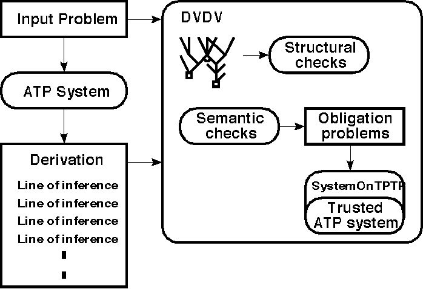

Implementation and Testing

Input
- Problem and derivation in TPTP format
- Trusted ATP system names
- Otter for testing entailment
- Paradox and SPASS for satisfiability
- CPU time limit for trusted system runs
Output
- Progress reports
- Failure reports
Results
- No failures found in TPTP solutions (yet :-)
- Finds failures injected into existing derivation files
- No test library of faulty derivations available